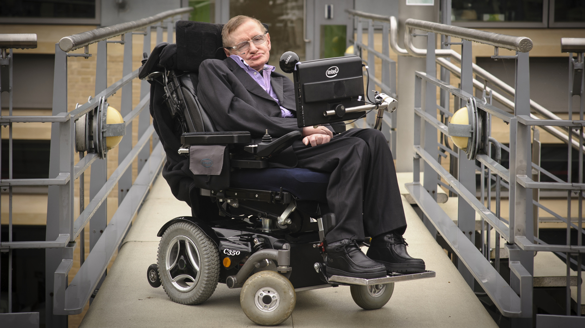
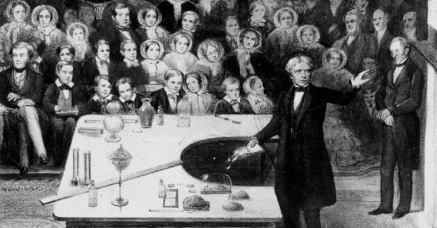
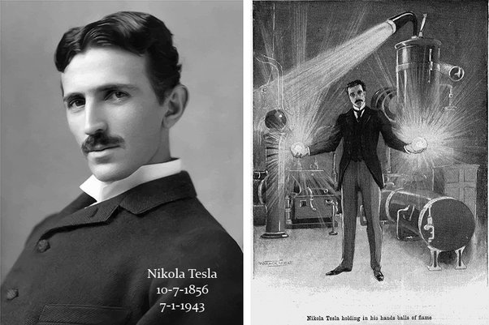
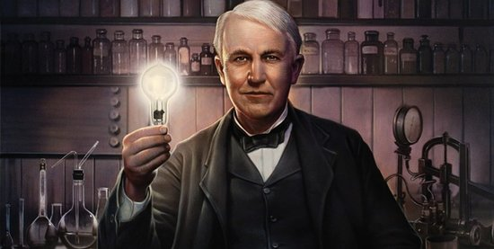

Stephen hawking (1942-) is an English phsicist and exper on Black holes.He works on cosmology,the science of the overall structure of the universe . He has discovred that small amount of matter can escape from black holes,and that they can escape.Between 1970 and 2009 he was the Professor of Mathematics at Cambridge University,England. Hawking is also the author of the best-selling book A Brief History of Time,which has sold 10 millon copies
Michael Faraday(1791-1867) was a victorian chemis and physicist who invented the electric motor. He was the son of a poor London blacksmith. Althout he had little schooling,he taugh himself from science books while working for a booking afterbwork. He became an anssistant to the chemist Humphery Davy in 1813, who took him around europe where he met some of the greatest scientists of the age. His most important work was his invention of the electri motor was his invention of the elecric motor in 1821. He also worked on magnetism, and later discovered how to make electromagnets, which ar used in electric generator. Apart from his work in physics, Faraday also made important discoveries in chmistry such how to make stronger steel.
Nikola Tesla, (born July 9/10, 1856, Smiljan, Austrian Empire [now in Croatia]—died January 7, 1943, New York, New York, U.S.), Serbian American inventor and engineer who discovered and patented the rotating magnetic field, the basis of most alternating-current machinery. He also developed the three-phase system of electric power transmission. He immigrated to the United States in 1884 and sold the patent rights to his system of alternating-current dynamos, transformers, and motors to George Westinghouse. In 1891 he invented the Tesla coil, an induction coil widely used in radio technology. Tesla was from a family of Serbian origin. His father was an Orthodox priest; his mother was unschooled but highly intelligent. As he matured, he displayed remarkable imagination and creativity as well as a poetic touch
Avul Pakir Jainulabdeen Abdul Kalam was born on 15 October 1931 to a Tamil Muslim family in the pilgrimage centre of Rameswaram on Pamban Island, then in the Madras Presidency and now in the State of Tamil Nadu. His father Jainulabdeen was a boat owner and imam of a local mosque; his mother Ashiamma was a housewife.His father owned a ferry that took Hindu pilgrims back and forth between Rameswaram and the now uninhabited Dhanushkodi.Kalam was the youngest of four brothers and one sister in his family.His ancestors had been wealthy traders and landowners, with numerous properties and large tracts of land. Their business had involved trading groceries between the mainland and the island and to and from Sri Lanka, as well as ferrying pilgrims between the mainland and Pamban. As a result, the family acquired the title of "Mara Kalam Iyakkivar" (wooden boat steerers), which over the years became shortened to "Marakier." With the opening of the Pamban Bridge to the mainland in 1914, however, the businesses failed and the family fortune and properties were lost over time, apart from the ancestral home.By his early childhood, Kalam's family had become poor; at an early age, he sold newspapers to supplement his family's income. In his school years, Kalam had average grades but was described as a bright and hardworking student who had a strong desire to learn. He spent hours on his studies, especially mathematics.After completing his education at the Schwartz Higher Secondary School, Ramanathapuram, Kalam went on to attend Saint Joseph's College, Tiruchirappalli, then affiliated with the University of Madras, from where he graduated in physics in 1954.He moved to Madras in 1955 to study aerospace engineering in Madras Institute of Technology.While Kalam was working on a senior class project, the Dean was dissatisfied with his lack of progress and threatened to revoke his scholarship unless the project was finished within the next three days. Kalam met the deadline, impressing the Dean, who later said to him, "I was putting you under stress and asking you to meet a difficult deadline".He narrowly missed achieving his dream of becoming a fighter pilot, as he placed ninth in qualifiers, and only eight positions were available in the IAF .

One of the most famous and prolific inventors of all time, Thomas Alva Edison exerted a tremendous influence on modern life, contributing inventions such as the incandescent light bulb, the phonograph, and the motion picture camera, as well as improving the telegraph and telephone. In his 84 years, he acquired an astounding 1,093 patents. Aside from being an inventor, Edison also managed to become a successful manufacturer and businessman, marketing his inventions to the public. A myriad of business liaisons, partnerships, and corporations filled Edison's life, and legal battles over various patents and corporations were continuous. The following is only a brief sketch of an enormously active and complex life full of projects often occurring simultaneously. Several excellent biographies are readily available in local libraries to those who wish to learn more about the particulars of his life and many business ventures.
